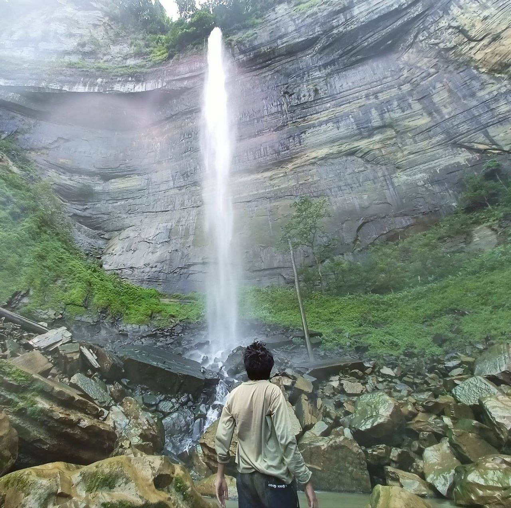
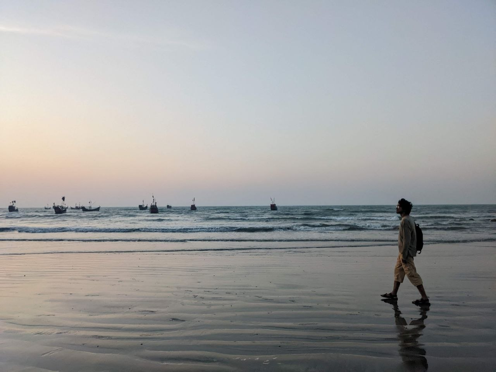

Travelling from 23 September. I'll be in Sydney for Interspeech 2026, so replies may be slow for a couple of weeks.
Machines that read people. Voices, hands, faces, handwriting.
I work on recognising and verifying human signals, and I move between them rather than settling on one. So far that has meant authorship verification, morph attack detection, iris recognition, speech emotion, sign language, visual speech, and machine translation. The interesting question sits underneath all of them: what makes a human signal identifiable, and what breaks it.
I'm a research assistant at BUET with Dr. Muhammad Abdullah Adnan, an R&D engineer at TigerIT working on face and iris biometrics, and an adjunct lecturer at Presidency University. I also lead SignSpeak, an incubator project very close to my heart.
Some of the work is evaluated on Bengali, which is my first language and a genuinely hard testbed. The methods aren't language-specific, and neither am I. If someone needs to pick up an unfamiliar modality and come back with results, that's the part I enjoy most.
Publications
BanglaLRS: A Continuous, Open-Vocabulary Benchmark for Bangla Visual Speech Recognition
Toward Training-Free Writing Biometrics: LLM Stylometric Profiles for Authorship Verification and Identification
Dual-Stream DNN-KAN Networks with Bangla-Specific Features for Speech Emotion Recognition
TF-IDF Informed Prompt Engineering with LoRA Fine-tuning for Bangla Hate Speech Detection
Enhancing Word-Level Sign Language Recognition
Framework and Model Analysis on Bengali Document Layout Analysis Dataset: BaDLAD
Experience
Software Engineer, R&D
- First place on the FVC-onGoing differential morph attack detection benchmark, using an AdaFace ResNet backbone with a lightweight detection head.
- Building an iris recognition system on vision transformers and circular CNNs to replace Hamming distance matching. Currently fourteenth in the world on NIST IREX 10.
Research Assistant
- Supervised by Dr. Muhammad Abdullah Adnan and Dr. A. B. M. Alim Al Islam.
- First author across sign language recognition, writing biometrics, speech emotion, visual speech, and translation.
- Helped secure research funding from RISE BUET and the ICT Innovation Division.
Adjunct Lecturer
- Teaching 200+ weekend-batch students: introduction to programming, object oriented programming, digital logic design, computer networks and security.
Junior AI Engineer
- Built a multimodal system modeling interface on JointJS, FastAPI, and React for SysML diagram generation, with LLM-based artifact exchange into Cameo Systems Modeler.
Education
MSc in Computer Science and Engineering
BSc in Computer Science and Engineering
Projects

EMPATH
Sign language recognition with a keypoint fix that recovers landmarks MediaPipe drops during fast motion.
Race
Two hand-built cars, RFID lap detection, radio comms, and a central Arduino running the game. Best Project in CSE 316.

Derma
A search-based skincare recommender built on my own scrape, which has since grown past 50,000 products.

BusBuddy
The admin side of the BUET bus automation service, used for campus transport.
- BanglaSTEM corpus and T5 model Hugging Face, 500+ downloads
- SkinSAFE skincare database Kaggle, 50,000+ products, 300+ downloads
- SkinSort skincare products Kaggle, 19,000+ products, 600+ downloads, 9 upvotes
Log
Off to Sydney for Interspeech 2026
Presenting the speech emotion work. Say hello if you're there.
Writing biometrics paper accepted at IJCB 2026
First place on the FVC-onGoing D-MAD benchmark
Reviewing for the AIMS Workshop at CVPR 2026, and on the RRPR 2026 program committee
Speech emotion paper accepted at Interspeech 2026, and BanglaSTEM at ACL SRW
Started teaching at Presidency University
Top five in all three subtasks at the BLP shared task, IJCNLP-AACL 2025
SignSpeak joined the BUET Incubator
Started at TigerIT Bangladesh
MSc research fellowship at BUET
Oral presentation at ICPR 2024
Research grants from the ICT Innovation Fund and RISE BUET
Grants and service
Photos




Get in touch
I'm looking for PhD positions and research collaborations for Fall 2027. Email is the surest way to reach me.